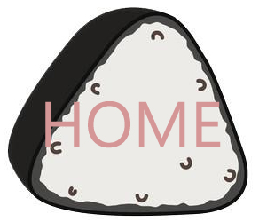
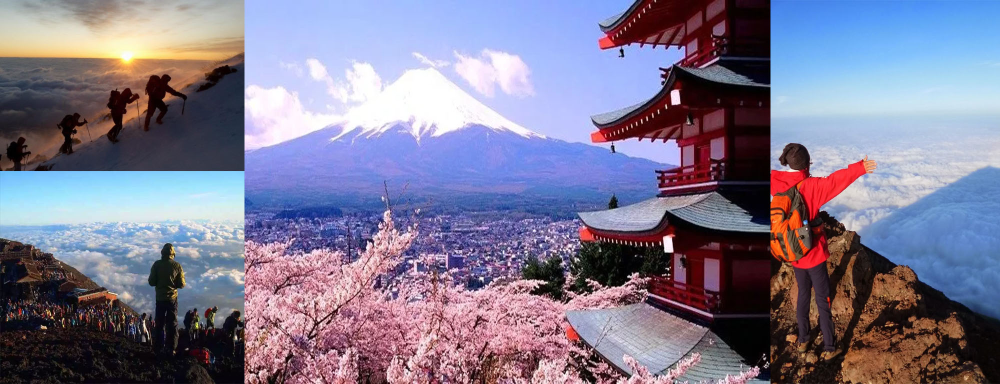
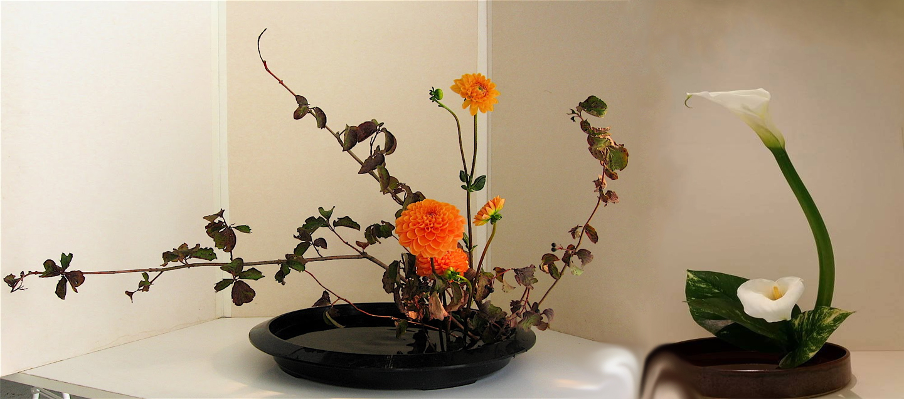

Actividades de recreación
Escalar el Monte Fuji
... Ruta 2: Subashiri (須走). Hasta la 8ª estación existen numerosas flores y plantas, lo que hacen la ruta un agradable paseo entre la naturaleza.
Altitud de la 5º estación: 2000 metros.
Número de albergues a lo largo del recorrido: 13.
Posibilidad de ver la salida del sol antes de llegar a la cima.
Subida: 7,8 Km. Aproximadamente 5 horas y media.
Bajada: 6,2 Km. Aproximadamente 2 horas.

Ceremonia del té
Según Plutschow, la ceremonia japonesa tradicional del té trata no solo del proceso de servir el té sino también de disfrutarlo. Desde que los chinos introdujeron el té en Japón en el siglo XII, la ceremonia del té, denominada chadō o sadō en Japón, representa los símbolos sagrados de la religión Sintoísta o Budista. El método lento, que en ocasiones dura horas, para preparar y servir apropiadamente el té está destinado a ser estéticamente bello y meditativo. La ceremonia tradicional del té sobrevive en las escuelas especializadas de Japón.

Arreglos florales
El arreglo floral, o "ikebana" es una actividad de ocio principalmente reservada a los entusiastas culturales del Japón moderno, pero originalmente fueron los monjes budistas japoneses, influenciados por los monjes chinos, quienes desarrollaron esta actividad de ocio en el siglo XV. "Ikebana" celebra la simplicidad. El proceso de acomodar flores y plantas con el énfasis colocado no en el color sino en la composición linear puede tardar horas, o incluso días, y es necesario que los participantes mediten a medida que acomodan las flores. Cada elemento en el arreglo representa el cielo, tierra o humanidad, así como la armonía entre ellos.

Observar flores
Otra actividad de ocio tradicional en Japón que incluye a las flores es "hanami" u observación de flores. En el Japón moderno, en primavera (usualmente en abril), se pueden observar a las personas que van a los parques en grupos, despliegan mantas en el suelo y disfrutan del "sake", que es el vino de arroz, y otros aperitivos bajo la sombra de los árboles florecidos. Ésta actividad de ocio tradicional de Japón se puede rastrear hasta el siglo VIII. Tradicionalmente, el objetivo del "hanami" es celebrar los espíritus de los árboles y pedir por una buena cosecha en el nuevo año. Mientras disfrutan de la comida y bebida, los participantes meditan sobre las bendiciones del año anterior y se relajan.
Para más actividades, leer aquí.
Atrás